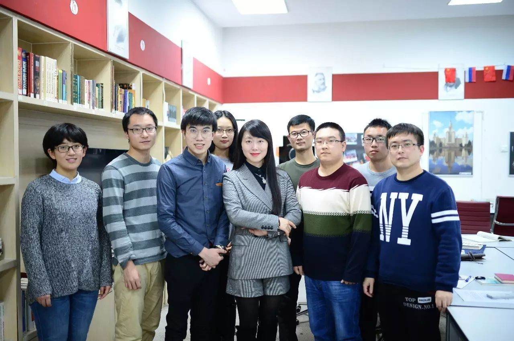
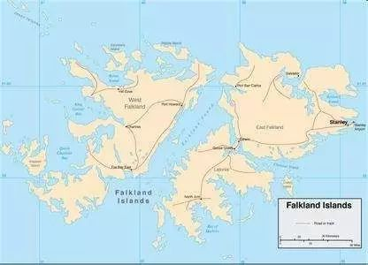

收录于合集
以下文章来源于同济战略派 ，作者肖晞、王琳
 同济战略派 .
同济战略派 .
同济大学中国战略研究院
文章来源：《国际观察》2017年第2期
 作者简介：肖晞，同济大学中国战略研究院研究员，吉林大学行政学院教授、博士生导师（上图前排右三）；王琳，吉林大学行政学院博士研究生（上图前排右一）。
导读
【摘 要】：实验法是科学研究的基本方法之一，其根本特点就是在高度控制的环境中，通过操作因素来研究变量之间的因果关系。实验法主要包括实验室实验、田野实验、调查实验。实验法在自然科学领域的运用已屡见不鲜，在社会科学的心理学、行为经济学等领域运用也较为广泛。在国际关系研究领域中，实验法已经实践于对外政策分析、冲突与合作、国际法、国际谈判等议题，但整体上运用仍处于早期阶段。未来实验法可在文化、身份、地位等相关议题上进行探索。目前，实验法虽不是国际关系主流研究方法，但与定性分析和定量分析中的其他方法相互融合、彼此交汇，必定会给国际关系领域带来新的视角和新的理念，从而进一步拓展国际关系领域的研究前景。
【关键词】：实验法 实验室实验 调查实验 田野实验 国际关系学
实验法是科学研究的基本方法之一，其根本特点是在高度控制的环境中，通过操作因素来研究变量之间的因果关系。实验法在自然科学和社会科学两大领域都有运用，在自然科学领域，如物理学、生物学、化学、医学等学科主要运用实验来验证某种现象和阐明某种原理。在社会科学领域，部分学科也采纳实验研究，例如心理学从哲学母体中脱离出来成为一门独立学科，正是从1879年冯特（Wundt）在德国莱比锡大学建立心理学实验室那一刻开始；经济学的分支行为经济学（Behavioral economics）也广泛使用实验的方法，得到了大量的成果。但同属社会科学领域的政治科学，在运用实验法研究相关议题的路上却走的较为缓慢，相比学者偏爱使用的档案研究、案例分析、田野调查、定性分析、构建模型等方法，实验法相关文献着实不多。作为政治科学子学科的国际关系学，近些年来也开始尝试使用实验法，然而学者对于这一方法仍抱有疑虑，只能说在某些议题上处于尝试状态，远没有达到心理学和行为经济学那种司空见惯的情况。曾有研究对国际关系学者进行研究方法的调查，结果发现超过1000个反馈意见中，仅4%的学者使用过实验法。这里本文详细介绍实验法的原理、分类，客观评价实验法的优缺点，简要梳理实验法在国际关系研究中涉及的领域，并对未来研究进行展望。
一
** 实验法的原理、分类及评价**
文艺复兴时期，自然科学通过实验将理论与经验事实联系在一起，从而推动自身学科的飞速发展。近几十年来，社会科学家也逐渐认识到实验对于学科发展的重要性。80多年前，美国社会学家索罗金曾说，“发展一门真正的社会学，看来是大势所趋。因为要对社会行为和社会现象的发展变化做出解释、预测和控制，只能通过实验，其他方法无法完全达到这个目的。”
（一）实验法的原理
实验法是指在高度控制的条件下，运用严谨的设计来操纵一个或多个变量的变化，通过这些变化来评估它们对一个或多个变量产生的效应，进而探究变量之间因果关系的方法。社会科学中实验法的基本原理是控制社会现象发生的条件，分析引起该社会现象的原因，从而阐明其中的因果关系。通常在实验之前，人们对于现有社会现象之间的关系做初步假设，通过实验操作来检验这些假设。实验主要涉及的概念有变量、实验处理、实验组与控制组、配对和随机化。
变量是指研究者操纵、控制和观察的条件或特征，是研究设计初期考虑的问题，可分为自变量、因变量和额外变量。自变量即刺激变量，是由研究者选择、控制的变量。因变量是研究者观察或测量的行为变量。简单说，自变量是因变量变化的原因，因变量是自变量作用的结果。在社会科学研究中，自变量常常是一个分类变量。例如研究中美两国大学生对朝核试验的看法，自变量就是国籍，因变量就是针对朝核的看法。额外变量是除自变量外，对研究系统内部的变量关系产生影响的其他变量。换句话说，额外变量也可能对因变量产生影响，但它并非是研究者感兴趣的变量。因此在实验处理中额外变量需要得到控制，使其在每个实验条件下保持恒定，这样最终它的作用会被平衡掉。上述例子中，性别可能是额外变量，故在招募被试和分配被试时，尽量做到中、美两个自变量下男女人数各半。实验处理也称实验刺激，是指研究者对自变量施加的控制行为，目的在于探究自变量变化对因变量产生的影响。在实验研究中，接受实验处理的组别是实验组，不接受处理的组别为控制组。两组的构成要素必须尽可能做到相似，通常采用配对和随机化的方式来实现。配对是把相同属性的两个研究对象分配到实验组和控制组。该方法在理论上可能，但现实中很难做到，因为世界上没有两个完全相同的研究对象，实施起来会面临困难。随机化是指在大样本的前提下，依照概率理论，以随机派遣的方式把被试分配到实验组和控制组，这样各组实验对象的构成条件基本相同，外部因素对其影响也是等同，即使会出现一些误差，也可归因为抽样误差，而非系统误差，从而使实验结果突显出实验处理的效果。随机化是实验最常用的处理方法，它不需要对研究对象的各种属性进行研究，应用极为方便。不过，在小样本情况下，为避免实验组和控制组的被试属性不对称，可采用配对和随机化结合的方法，先将样本在某关键变量上配对，然后再随机分配。
（二）实验法的分类
国内学者将实验法分为标准实验和非标准实验，实验室实验和实地实验。欧美有学者分为纸笔实验、调查实验、计算机化的过程追踪实验、田野实验或自然实验、认知神经实验。实际上，实验法总体上可分为实验室实验和非实验室实验。纸笔实验既可以是实验室实验，也可以是非实验室实验，认知神经实验涉及到采集脑电波或神经影像的仪器，通常在实验室内完成。本文根据国际关系学者所采纳的实验法，将其分为实验室实验、调查实验和田野实验，并结合相关研究案例，简要叙述其做法。
实验室实验（lab experiment）。它通常是指在实验室内，研究者借助实验仪器主动创造和严格控制实验条件，用给定的刺激来引起被试一定行为反应。自然科学领域进行的实验多属于此类实验。国际关系领域有学者对此进行了尝试。例如，明茨（Mintz）2004年采用实验室实验研究任务熟悉性在对外政策决策中的影响。被试选自于美国空军学院的72名高级军官，设计类型为两因素（2×3）实验设计。实验包含两个自变量：第一个是任务熟悉性，该因素下有两个水平：熟悉和不熟悉。熟悉任务是让被试处理两岛之间的军事争端，不熟悉任务是在太平洋四个小岛中选择一个作为美国海军基地。另一个自变量是信息的模糊性，该因素下有三个水平：不模糊，该水平下对选项的效价评估是单一的数字；中等模糊性，该水平是±1的范围内评估，如效价5用“4-6”之间来代替；高度模糊性中的评估±4，如效价4用“3-7”之间来表示。研究选用决策平台程序来呈现行动选项，让被试做出最后的决策。结果表明在不熟悉的任务情况下，被试更多的使用基于维度的搜索策略，从而证明了政策制定者在做决策的时候，首先基于维度来简化复杂的决策问题，消除不可接受的选项，然后基于选项的加工来评估剩余的选项。
调查实验（survey experiment）。它是指在调查的过程中嵌入实验设计，通过调整问题的不同措辞和不同顺序，将调查对象随机分配到控制条件和处理条件中去，从而分析调查结果。调查实验多用于公众意见和公众行为的方法论研究领域。例如，斯蒂芬（Stephen）运用调查实验来分析国际协议同听众成本之间的关系。研究目标是想在国际协议背景下，评估一致性效应和政策效应之间的关系。研究者感兴趣是：当被试得知政策与过去协议不一致，哪个效应对被试支持某特定政策有较大影响；被试对政策本身偏好的强度是否调整了一致性效应。在实验中，给受访者呈现假设情境：美国某建筑公司长期使用本土金属支架制造公司的产品，现该公司准备购买欧洲公司同类低价产品来替代本土公司。鉴于此，总统考虑是否颁布政策来限制进口。情境呈现之后，受访者都将得到一个论据：支持限制进口的分析家认为美建筑公司购买国外产品，本土制造公司将不得不面临裁员。该研究是单因素实验，自变量为处理方式，因变量为总统政策支持率和受访者自身的政策偏爱。自变量下包含三个水平：国际协议处理。反对限制进口的一些分析家认为此举违背美欧自贸协定，欧洲将会在世贸组织中控告美国；经济处理。反对限制进口的另外一些分析家认为若该公司购买价格较贵的本土产品，该公司将被迫裁员；安慰剂处理。反对限制进口剩余分析家认为将有不利的后果，限制进口的损失要大于此举所获得的收益。将被试随机分配处理组和控制组中，然后告知被试，总统决定支持限制进口，询问被试是否支持总统。为测量被试政策偏爱，实验后让受访者回答一个标准的自由贸易问题。结果表明，一致性效应影响没有强烈政策偏好类别下大部分民众。对于这些民众来说，听众成本实际上是有代价的，即过去承诺和当下政策的不一致，导致领导人支持率实质性的下降。然而，对持政策偏好的公民来说，即便得知领导人政策违反过去协议，也不会实质性的改变自身对领导人的支持或反对。
田野实验（field experiment）。它是指在真实世界环境中，主试对被试进行基于研究目的实验干预，旨在调查被试的行为及心理活动。同实验室实验相似，田野实验通常将被试分配到处理组和控制组，然后比较两组之间的结果。在国际关系领域，有研究者采纳此法。例如，芬德利（Findley）及其合作者运用田野实验研究国际匿名公司注册问题，该研究旨在探究提供注册服务的代理公司是否遵守国际标准。研究者化名给代理公司发邮件，询问建立离岸公司相关服务及注册费用，并希望可以做到避税和减少法律责任。该研究为单因素实验，自变量为处理方式，处理方式有四个水平：分别是管理主义处理、美国籍处理、理性主义处理和建构主义处理，控制组为安慰剂处理。每种处理条件下，邮件内容有所区别。研究因变量为回复率。结果表明，首先，很多注册服务供应商不遵守国际标准，在提供成立空壳公司服务时未要求顾客提供必要的身份信息。第二，当提示规则存在及规则内容时，服务商也没有遵守国际规则，说明规则标准信息的增加并没有显著改善遵守率。第三，服务商对规则标准信息和不遵守会违法相关信息的组合呈现方式更为敏感。在理性主义处理条件下可以看到明显的效果。第四，在咨询言语中声明规范和声誉，而不是同对方强调提升警惕和遵守国际标准，可能会消除服务商疑虑，认为咨询者值得信任，故需要很少的审查。但名誉声明和违法标准引诱的结合可能作为一种邀请，为共同利益彼此勾结，从而违反规则。
（三）对实验法的评价
实验法至少提供了四个优势。第一，得出因果推论关系的能力。实验法的比较优势在于它高度的内部效度，其他研究方法都不能对因果关系提供强有力的支持。第二，实验控制。实验法允许研究者对测验环境进行严格控制，除此之外，被试也被随机安排到各处理条件下。随机化的过程创造各被试处理前的相似性，因此观察到的任何结果上的差异都可以归因为对自变量的操纵，而非被试个体因素上的差异。第三，精确的测量。实验中，研究者会消除或平衡各条件下影响因变量的额外因素。此外，统计分析还可以详尽的验证变量之间的关系，及彼此的交互作用。第四，实验可以提供详尽探讨细节的能力。复杂关系在实验中可以被打破、孤立、分解成较小的单元来研究，从而观察哪一部分的加工导致了感兴趣现象的发生，并且实验还允许探讨添加或缺失某个变量所导致的特定关系，从这个意义上说，过程和结果都可以得到研究。当然实验法也不是一剂万能药。对于政治科学领域来说，实验法并非唯一或最好的研究方法，它只是用来检验问题的方法之一。学者对于实验法缺点的关注可概括为两点。第一，样本代表性。实验所选择的被试可能无法代表研究者感兴趣的人群。第二，外部效度。很多实验设定是在人工环境下进行的，可能无法代表被试正常行为表现的环境。实际上，这两点缺陷主要是针对实验室实验法。对于社会科学研究来说，可从两个方面破解这个“僵局”——既需高度的内部效度，又要较强的外部效度。第一，将最感兴趣的那部分被试，带到实验室里，从而提高实验室实验的外部效度。第二，走出实验室，在真世界中寻找合适的人群，但务必注意严格的实验控制，从而提高田野实验的内部效度。实际上，每种实验方法都有其各自的优势，也不免有缺陷。但关键仍需具体问题具体分析，要针对研究问题选择合适的研究方法。未来实验法在国际关系研究中的运用需权衡其各方面，经斟酌之后再择使用。
二
实验法 在国际关系研究中的应用
实验方法在政治学研究中主要涉及三个领域：投票和选举、委员会和陪审团的决策、合作和协调的问题。作为子学科的国际关系研究目前采纳实验的文章相对较少，实验法应用主要围绕对外政策决策和国际谈判两大领域。本文在这里不提供一个年代学上的梳理，只简要讨论实验法在这个领域内所涉及的主题。除了前文例子中的议题外，国际关系研究中的实验还包括模拟军控谈判的实验、模拟战争危机的实验、模拟恐怖袭击的实验。
（一）模拟军控谈判
国际背景下的谈判有多种形式，可以远程，也可以面对面；可以处理单边问题、双边问题，也可以处理全球参与性问题。“谈判时代”开启甚早，但人们对于谈判过程却知之甚少，相关文献多属于描述性和轶事性，主要是案例研究。实验法可以促进对谈判中个体角色的理解。例如，伯纳姆运用实验法模拟国际军控谈判，来考察问题侧重点的差异在军控谈判中的作用。研究选用了麻省理工学院66名大学生参与实验。模拟谈判一共有11轮，每轮6人，随机分配被试到每轮次下美国组，苏联组和英国组，每组2人，在其中各自扮演裁军部门主管和首席谈判官。该研究为单因素实验，自变量为问题重点，下属3个水平，以3种不同版本的谈判说明来呈现。第1种，建议把削减军备作为当务之急。第2种，敦促取消检查的建议。第3种，言语较为中性，未提及任何详细的裁军问题。实验分为6轮实验组和5轮控制组，在实验轮中，有2个谈判组接受冲突说明，1个谈判组接受中性说明。控制轮中，所有谈判组均接受中性说明。因变量为谈判的过程和结果，对过程的分析主要是针对谈判各方彼此情感的评估和对谈判内容的分析，谈判结果的分析主要是指问题让步的数量和最终达成的协议。
为验证不同的问题重点增加谈判各方的负面情感，研究者用10点评定量表（-5到5）来进行评定。结果表明，同控制轮相比，实验轮中的美国谈判组评定苏联组和英国组更为负面。而实验轮的苏联评估美国谈判者和英国评估美国谈判者同控制轮相比差异均不显著。美国谈判者在实验轮中对苏联谈判者的动机实施了14次攻击，控制轮中只有2次。苏联谈判者在实验轮中对美国谈判者实施了20次攻击，控制轮中只有8次，这两组数据差异均显著，表明在实验轮中双方存在更多敌意上的互动，即不同的问题重点诱发了敌意信息的互动，敌意信息的发出更容易受到敌意信息的回报。实验轮的美- 英谈判和苏-英谈判彼此之间的交互均少于控制轮，但实验轮的美- 苏谈判的交互要显著多于控制轮。这说明，当谈判双方持不同问题重点时，会通过更多的互动来避免这个问题或者来解决这个问题，此外也说明，当双方地位不平等时，互动很少被使用。问题重要性的差异所导致的负面情感和敌意的交互通常以较少的让步和较低的协议达成率为特征。通过检验美国和苏联谈判者在实验轮和控制轮中的让步数量发现，美国组在实验轮做了23次让步，而在控制轮做了12次让步，但差异不显著。苏联组在实验轮做了11次让步，控制轮中做了22次让步，二者差异显著。此外，实验轮中达成的协议比例（33%）要少于控制轮中达成率（60%）。
该研究对国际关系领域意义重大，根据结果可以看出国家间的冲突可以通过心理因素得到加强。持不同问题重点倾向的谈判国家，可能会导致彼此的误解、敌意互动、让步较少和协议达成率偏低。如果对彼此所在意的重点问题能够有更多清晰的意识，那么在谈判桌上可能会有更成功的互动，并且能够集中彼此之间的实质性问题。
（二）模拟战争和危机
传统的国际关系分析，学者将注意力更多的放在物质因素上，故在做出战或不战的决策时，更多的注重国家利益，同时认为在相互依赖的体系中，所有行为者的决策模式都是理性的，或至少近似理性。然而和平- 战争决策也受到诸如心理因素等其他因素的影响。认知心理学认为图式可以提供对知觉的过滤，从而转化为决策和行动。根据图式理论，存储于长时记忆中的常识和环境事件可以作为框架或脚本得到提取，成为当前事件的类比对象，从而服务于当前的行动。图式是一种心理表征，是一种心理上的预演和实践，如果能将图式激活，那么就可以同现实情况联系起来，为现实所用。除图式之外，人格因素对知觉和行为也有重要影响，在激活加工中也有重要的意义。不同人格类型的被试，可能会运用不同的方式来查看、记忆和使用相同的图式，给予图式维度不同的权重，从而得出不同的结论。在实验背景下，研究者可以探讨导致和平和冲突的心理加工。

贝尔等人运用实验检验与战争有关的启动在对外政策行动上的影响。目的是探究特定变量是否可用于预测合作或冲突的行动选择。研究选择60名大学生，整个实验共分为九个阶段。第一阶段，运用16PF人格因素问卷检验个体的人格特征。第二阶段，测量被试国际关系知识储备，相关问题为两次世界大战期间的政治事件。第三阶段给被试启动一个特定图式。其中三分之一的被试接受插画a（描述一战时英德双方在堑壕战中的高伤亡率，以及损失对战后士气的影响），另三分之一的被试接受插画b（描述西方政治家在处理德国入侵捷克斯洛伐克的政策，声明绥靖政策最终导致更广泛和更长期的冲突），剩余被试没有给插图，为控制组。第四阶段呈现决策场景。场景以福克兰群岛危机为模型，描绘了Afslandia（原型是英国）和Bagumba（原型是阿根廷）双方因对某岛屿拥有权有争议发生的冲突。第五阶段，让被试选择该危机下Afslandia和Bagumba可能采取的行动。选项问卷总共有五张纸，每张包含15种不同行动。评估范围是从1到15。效价1代表最和平的解决问题方式，效价15代表着全面军事报复。第一张纸让被试以A国为视角，选择应对B国入侵小岛的行动。第二张是以B国为视角，在得知A国在第一张已采取的行动后，做出应对A国的行动，然后依次交替，直至五张纸全部选择完毕。第六阶段是10个关于在第三阶段所阅读的启动插画的判断题。控制组在这里不需要测验记忆，因为他们没有阅读插画。第七阶段是10个关于第四阶段呈现的两国冲突场景的判断题。第八阶段以随机顺序呈现的是第五阶段的那五张纸，目的让被试回忆自己在每张纸上的选择。第九阶段询问被试是否此危机令其想起历史上的任何近期事件。
研究者首先对阶段5和阶段8进行了2×2×2×5四因素方差分析。被试间变量为启动条件（一战、二战），人格类型（高支配，低支配）；被试内变量为阶段（阶段5，阶段8）和选择（第一A，第二B，第三A，第四B，第五A）。结果表明启动条件主效应不显著，但启动条件和人格类型交互作用显著。具体表现为高支配组更为冲突性。控制组中的被试，在高低两个支配组没有差异。这说明启动插画发挥了作用，被试冲突或合作行为的倾向被基本的战争场景激活。选择的主效应显著，被试第一次选择更为冲突性，最后一次选择更为合作性。研究者随后对第九阶段进行了2（高支配、低支配）×2（识别、未识别）两因素方差分析，发现人格特征和识别危机来源交互作用显著。具体表现为在没有识别危机来源的被试组中，人格特征彼此有显著差异，同低支配相比，高支配组的被试本质上更为冲突性。这表明识别组被试的反应至少部分是来自于对实际历史事件的记忆，而不是自身的人格倾向，然而未识别组的被试受到人格倾向的影响。
该研究表明在模拟的国际环境背景中，历史类比的启动对行动选择具有重要的影响。人格特征的重要性仅在被适当的启动激活时，才发挥出来。此外，人格特征差异的重要性仅体现在没有识别历史事件的群体中，如果被试识别决策场景来源，那么人格特征的作用就被抑制。这个实验表明采取和平- 战争的行动并不是仅依赖于对收益和成本的理性计算，可能也会受到先前线索的影响，在该研究中启动插画就提供了这种线索。在真实世界的对外政策制定和大众意见形成过程中，启动线索来源广泛，如决策者之间先前的会话或会议、官方备忘录、新闻媒体报道、流行电视和电影娱乐等。这些线索有助于解释相似利益的多个行为者在同样的对外政策事件中为何表现的截然不同，而该研究认为历史事件线索启动联合人格特征可能是导致这些差异的潜在原因。
（三）模拟军事袭击和恐怖袭击
当前国际上很多地区的冲突都是恐怖主义组织发起，大部分关于恐怖主义研究的文献也主要关注它对民主体制、对外政策和国际关系的特定影响。恐怖主义背后可能受到某些国家的支持，有研究认为民众没有把恐怖主义团体等同于它所属国家，所以决策者、民众对恐怖主义袭击做出报复性冲突反应要小于对本国的军事袭击，但这类研究多属于案例研究，缺乏实验研究的支持。军事袭击通常由明确的国家支持来源，所以民众对其的敌人意象更容易被激活，若恐怖袭击的次数逐渐增加、恐怖主义背后的国家政体与受害国相同或相异，是否会改善民众对恐怖组织的敌人意象？袭击发生地是否会影响民众？都是值得探讨的问题。公众对袭击的反应不应被专家和决策者所忽略，了解公众对媒体报道袭击反应的认知因素，有助于进一步探究政治精英的决策过程。希利（Healy）运用实验法探讨个体对恐怖主义袭击和军事袭击的反应，研究总共包含三个实验。
实验一比较民众对军事袭击和恐怖主义袭击美国本土和国外的反应。实验设计为四因素混合设计，被试间因素为和平协议（有和平协议、无和平协议）、袭击类型（军事袭击、恐怖主义袭击）、性别（男、女），被试内因素为轮次（1、2、3、4、5）。40名科罗拉多大学生参与实验，男女各半。实验首先让所有被试阅读Afslandia和Bagumba两个虚构国家的冲突背景。其中A是美国盟友，B是美国对手Calderon国的盟友。之后实验组被试阅读关于两国曾签署和平协议的新闻稿，控制组被试不给予新闻稿。随后，所有被试收看简讯，描述B袭击美驻扎在A国的维和部队。在实验组和控制组两个条件下，各一半的被试分别得知袭击为军事袭击和恐怖主义袭击，让被试从12个政治军事行动中，选择最适合美国的行动选项。在第一回合反应之后，继续观看第二条描述冲突持续的简讯，然后作出反应，直至五轮结束。实验一结果发现轮次和攻击类型之间的交互作用，具体表现为最初被试对军袭做出冲突反应要大于恐袭，但随轮次增加，对恐袭做出冲突反应会逐步上升。换句话说，在重复性袭击中，对恐袭的冲突反应要大于军袭。可以这样理解，被试可能将初始的恐袭理解为一个孤立事件，不值得强烈的政治或军事报复。然而，随着恐怖主义进行重复性攻击，被试的观点相继发生变化，从而对其进行报复反应的水平可以匹配或超越对军袭的反应。
实验一中的袭击地点非美国本土，因此被试对其反应可能会打折扣。实验二将袭击地点设置在本土和国外（E国），袭击类型只保留了恐怖袭击，背景信息删除A国和B国，主要描述美国和C国之间的持续性冲突。实验二引入新自变量：政府类型和人格特征。告知实验组被试C国是民主国家，告知控制组C国为非民主国家。实验二结果表明政府类型主效应不显著，即民众对政体类型不同的C国的报复反应没有显著差异，说明与民主和平假设不一致，因为民主和平理论认为政体类型相同的国家很少卷入彼此的战斗。但随轮次增加，被试冲突反应会进一步增强，这点不论是袭击地点是本土或国外都存在。实验三在实验二的基础上细化了袭击目标，分为军事目标（海军舰艇、军事营区、空军基地）和文教目标（图书馆、博物馆、大学），但袭击地点只保留美国本土。结果表明袭击目标的主效应显著，被试针对军事目标被袭击做出的冲突水平要显著高于文教目标。性别主效应显著，男性表现出更高的冲突水平。人格特征和轮次交互作用显著，具体表现为随着轮次的增加，支配型人格的被试表现出一个逐步升级的冲突分数。
该研究表明个体决策者对袭击起初都处于一种宽容的模式，但是随着冲突不断重复而升级，潜在关键认知变量的作用开始有所体现。公众对国际争端报道的反应是动态的，在面对持续冲突时，初始反应可能不同于后续反应。这个研究较以往研究关注新的变量——袭击目标。针对军事目标的袭击，让被试更容易做出冲突性的反应，因为对军事目标的攻击更接近于战争行动，更容易引发被试对袭击者的敌人意象，因此对于这种袭击的报复会更具有冲突性。
三
展望
目前，实验法在国际关系研究中并非主流的研究方法，仍处于稳步探索阶段。未来的研究中，若学者渴望得出变量间清晰的因果关系、试图解决使用其他方法发现的差异、或者旨在弄清潜在心理加工的微观基础时，相关议题可能会从实验法的应用中受益，例如跨文化研究，身份的研究，探研究地位竞争的影响等。中国国际关系研究发展迅猛，国家对哲学社会科学研究的扶持力度也逐年增大，学者们对定量研究方法重视力度也不断提升，运用实验方法来验证学者们感兴趣的问题不失为一种有效手段。
（一）可拓宽的领域
文化。自亨廷顿《文明的冲突》问世以来，学者开始对文化在国际关系中的作用感兴趣，掀起了国际关系领域“文化热”的浪潮。从国家层面来研究文化对一国对外政策影响，很少有实验类研究，可能是因为文化的作用方式和影响力难以测量。但在心理学领域，文化心理学的研究已较为成熟，一些关注东西方的文化差异实验，值得国际关系学者借鉴。尼斯贝特2003年使用实验来对比东亚（日本）文化和西方文化。所选被试为美国人和日本人，要求被试观看一段20秒的动画片段，之后描述自己看到的画面。被试回答的第一句话作为被试先注意到的是目标或是背景。结果发现，美国人最先提到的目标频率远比日本人多，而日本人更多的首先注意到背景。并且日本人也比美国人更容易注意背景与主体的关系。这个结果意味着两种不同的特征捆绑策略：将特征单独识别并进行序列加工、把不同特征捆绑在一起识别。以日本人为代表的东亚人显然更倾向于后者，这是一种典型整体思维的表现，而以美国人为代表的西方人则倾向于独立加工，是一种分析思维的表现。这个实验对国际关系领域的文化研究有借鉴意义。首先，它表明文化可作为自变量（国籍）在实验研究中进行探索。其次，有助于理解不同文化背景的国家针对国际冲突的解释，或自我发挥作用的评估。进一步的研究可以探索文化如何影响特定情绪的表达、如何影响决策风格和决策加工，这将有助于国际关系学者探索协商谈判的风格。
身份。身份或社会身份是社会学和社会心理学中流行的术语，它涉及到“我是谁”和“我们是谁”，“我在哪里”和“我们在哪里”的反思性见解，这种观念决定了“我想要什么”和“我以什么样的方式生存”。在国际关系领域，随着建构主义的兴起，引入身份已经成为学科发展的一大趋势。温特强调了四种身份：个人、类属、角色和集体。集体身份捆绑了共享的价值观、信念、态度、规范和角色，被用做在内群和外群之间划清界限。集体身份的构建同威胁知觉是否存在相关？社会认同理论认为，个体通过社会分类，对自己的群体产生认同，并产生内群体偏好和外群体偏好。个体过分热衷于自己的群体，认为自己的群体比其他群体好，并在寻求积极的社会认同和自尊中体会团体间差异，就容易引起群体间偏见和群体间冲突。该理论提供了对身份建构和威胁知觉的非物质性解释，认为对外群体成员的偏见态度和差别对待行为与对外群体的担忧有关。威胁模型认为威胁知觉可以作为内群和外群之间的一条界限，那么自我和他人之间共享的身份水平高低影响彼此对威胁的知觉。共享身份的意义越大，个体对他人的情感依赖就越强，此外共享身份意义将会让个体把自己分类的与他人更近，会降低他人意图对自己造成负面后果的信念，因此会通过增加个体同他人合作的意愿来调整行为。根据以上这些理论，在国际关系研究中，可将身份做为自变量，来研究它对威胁知觉的影响。现实主义认为若某国被认为军事权力很强，那么与其相关的国家的威胁知觉会增强。建构主义认为若某国被框定同本国相似，如语言、宗教和文化等相似，那么相应的威胁知觉会降低。因此，可将军事权力和共享身份作为自变量，通过实验探讨共享身份的程度是否调整了权力不对称性对威胁知觉的影响。
地位。地位是社会生活的一个基本方面，它影响着个体和群体的互动。在国际关系研究中，地位通常被用来解释霸权战争和新兴国家的外交政策。权力转移理论认为，崛起国对现有国际秩序不满，而霸权国想要维持现有秩序，因此两类国家围绕国际秩序主导权问题会产生竞争与冲突，当前者认为有机会通过战争赢得主导权的时候，他们就会毫不犹豫地通过战争来争取改变现状，寻求适合自己的地位。在对外政策分析研究中，关于地位关注对领导人的重要性，社会认同理论和进化方法已经得到相似的结论。建构主义也得到相似的观点。然而，现有国际关系常用研究方法很难评估地位在世界政治中的因果效用。第一，来自某些大数据中的相关可能受到无关变量的干扰。另外，在案例研究中，很可能将领导人的“空话”考虑在内。第二，地位依赖于对他人信念的信念，这妨碍对地位的直接测量。因此，学者建构了如外交代表、购买航母、奥运会表现等对地位较为粗糙的代理。当然单一方法不可能解决所有问题，但实验可以直接操纵和测量利益的概念，从而提供对现有研究的补偿，故有能力对地位在世界政治中的作用做出因果关系推论，并且来自心理学实验的证据表明‘失去地位的威胁对判断和决策有直接影响。此外，其他研究者也发现不稳定的社会层次诱发了杏仁核的激活，而大脑的这一部分通常与情绪诱发和决策启发有关。地位在实验研究中如何操纵？研究视角可从地位本身的影响转移到对相对地位的关注，比如考察权力对相对地位关注的调节作用。可选取两类被试，一类具有权力的领导人，一类与之匹配的控制组。让双方进行决策实验。例如设置同政治和战争决策相似的场景，实验中让他们体会获得地位和失去地位，之后面对之前已经投入巨大努力的情境（沉没成本），询问被试是否仍需继续升级他们的承诺，去赢得“这片领域”，还是削减预算直接退出，然后比较两组的决策结果。
（二）中国国际关系研究中实验法的可行性
目前，国内国际关系的研究方法仍以定性研究为主，定量研究较以往有所增多，但极少运用实验法来研究相关议题。究其原因：首先，大部分研究议题不适合运用实验法。第二，研究方法训练中未给予实验法应有的重视。第三，科研经费不足，无法有效支撑实验设计、购买设备、数据处理和支付被试报酬等相关费用。第四，担心实验法外部效度。尽管对实验法有所顾虑，但实验法在国际关系研究中的未来值得可期。首先，国家对哲学社会科学扶持力度加大。习总书记在2016年哲学社会科学工作座谈会上强调加快构建中国特色哲学社会科学。由此可以看出，国家对哲学社会科学研究扶持力度定会逐步加大。有了国家的大力支持，政治学等诸多学科定会不断推进学科体系、学术体系、话语体系的建设和创新。其次，国家公派留学生人数逐年增多。其中国际关系专业的学生，在海外留学期间会接触诸如实验法等研究方法，先进的方法理念定会融入他们的学术思想，在未来的工作或研究中，有助于学科研究方法的建设。再者，中国的国际关系学科建设有了较快发展。中国道路、中国模式、中国崛起和中国话语的原创性理论研究也逐渐增多。实验法在验证理论模型上有其独特的魅力所在。
本文旨在促进学者对实验法在国际关系领域研究中应用的关注。作为一种探索式的手段，实验法可从微观水平上通过评估因果关系来验证理论，从而更好的理解国际舞台上的行为者对国际和国内政治的影响。不拘泥于一种方法，采用多种有效的方法来研究问题，这是科学的态度。研究者应秉持的理念是：最好的发展便是实践，最好的实践也应得到发展。实验法在其他学科中有着漫长和卓越的使用历史，在国际关系研究中，实验法的运用整体上处于初期阶段，对它们的评价也为时过早。研究者需意识有必要建造一个连贯的研究议程，同已有理论建立清晰的联系，允许实验研究的发现在国际关系领域的宏观问题上，为研究者提供更清晰的理解。实验法不可能触碰国际关系所有领域，亦不可能在国际关系大部分领域硕果累累，但可以明确的是，它并未得到充分的关注和利用，故在未来的研究中，它将拥有很大的发展潜力。实验法同其他研究方法相结合，定将为国际关系研究注入新的活力。